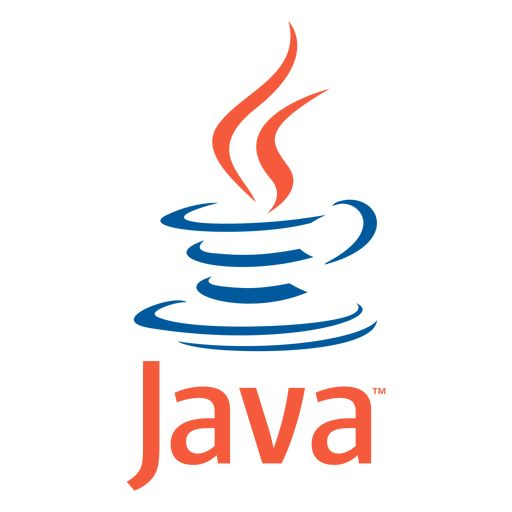
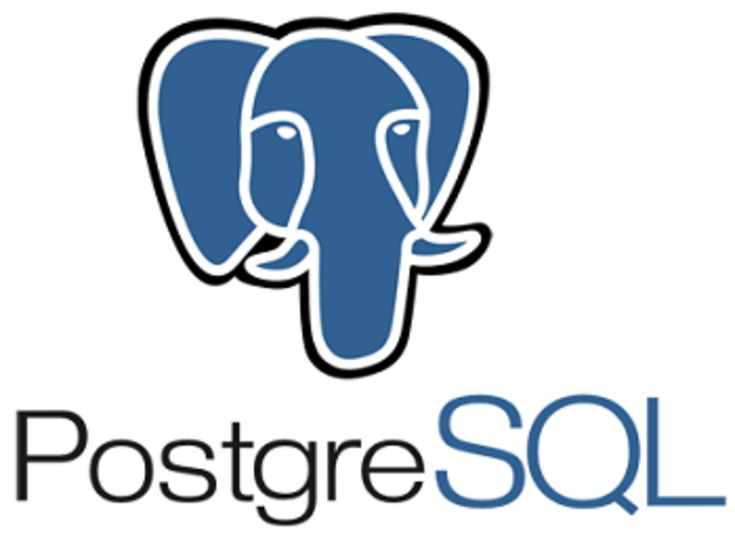
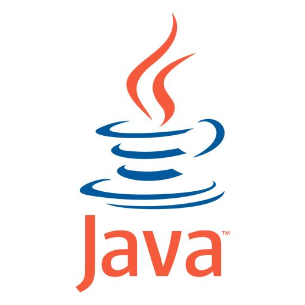
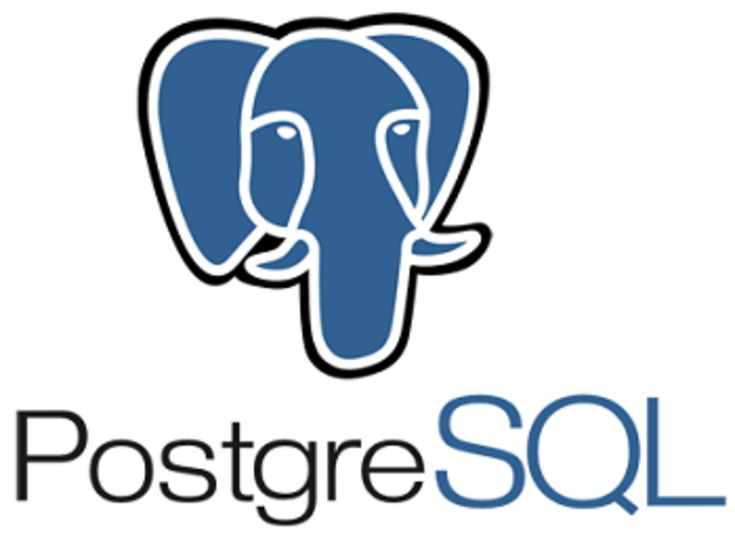

Sobre mí
Me encanta analizar datos y resolver problemas reales utilizando herramientas tecnológicas, pero también disfruto colaborar en proyectos que tienen un impacto positivo en la sociedad. Por eso estoy participando en Construye, el programa de emprendimiento social del ITAM, y en el HackLab, el laboratorio de ciberseguridad del ITAM.
Valoro mucho el aprendizaje continuo y la curiosidad, ya sea explorando nuevas tecnologías, leyendo sobre temas diversos, o enfrentándome a desafíos fuera de mi zona de confort. Me considero una persona analítica, perseverante e innovadora, con un enfoque práctico. Además, soy amable y paciente, cualidades que me ayudan a escuchar y valorar las opiniones de los demás. Creo firmemente que las mejores ideas surgen del intercambio de perspectivas y la colaboración en equipo.
Soy una persona comprometida, disciplinada y me esfuerzo por mantener un equilibrio disfrutando de actividades como el tenis, los videojuegos, o simplemente pasar tiempo con buena comida y amigos, especialmente mi favorita: la tarta tatin y la pasta aglio e olio.
Mis herramientas favoritas son Python, Java, MongoDB y PostgreSQL, porque me permiten convertir ideas en soluciones tangibles. Sin embargo, lo que realmente me motiva es la posibilidad de colaborar con otros, aprender juntos y encontrar formas creativas de resolver problemas.
Mis Favoritos
Comidas:
Lenguajes y herramientas:
 



Proyectos
- LanceDB - Base de datos embebida para gestión eficiente de vectores.
Contacto
Email: jake@example.com
GitHub: github.com/BraulioPartida